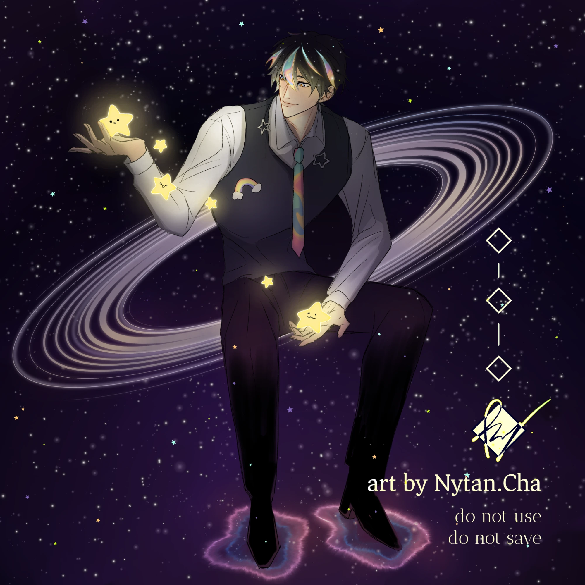
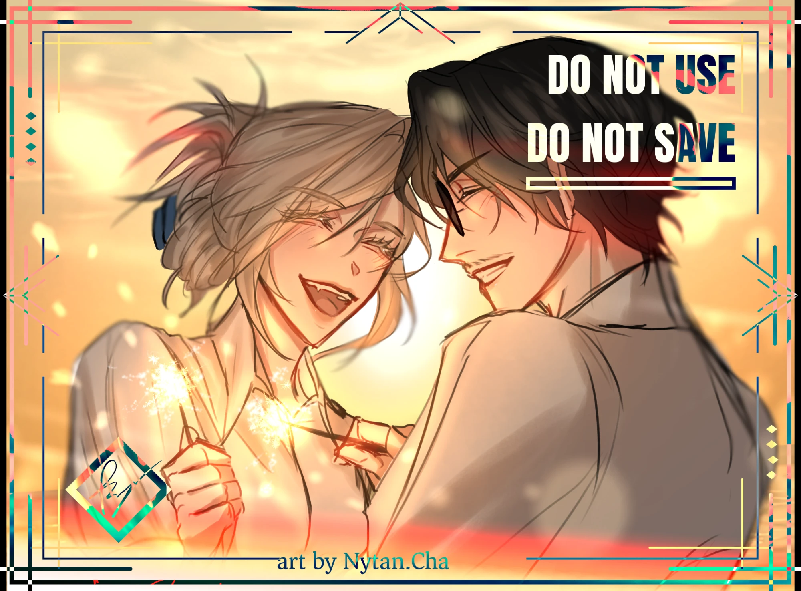
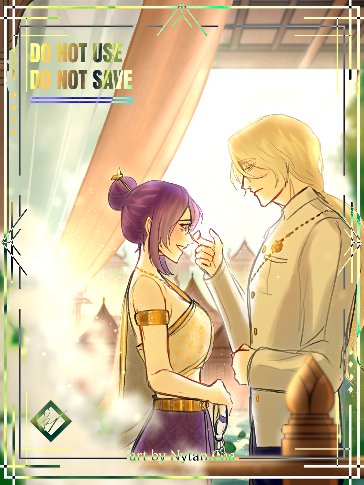
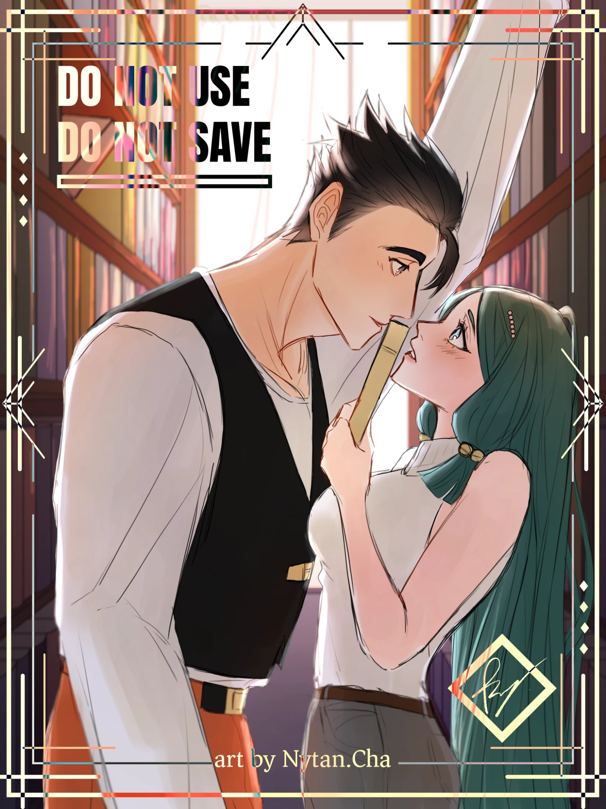
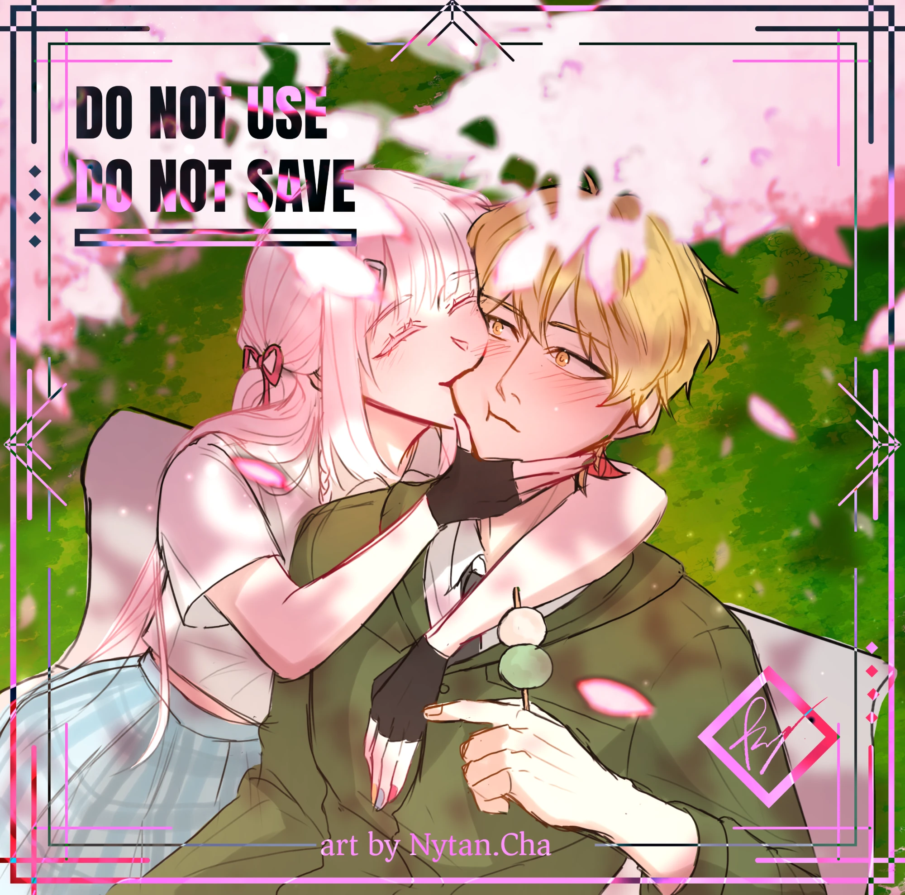
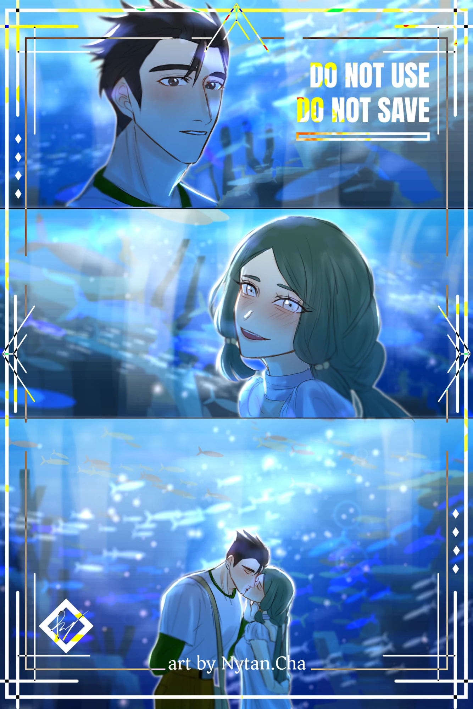

← Product & Prototyping · Character × Tech
MOFYCH Commission Website
I designed the MOFYCH website as an illustrated storefront for my commission shop, where I take illustration and handmade doll orders. Customers can follow the queue. For painted pieces, I want the colour to be exact, so the site also includes a paint matcher.
In short: Solo. I designed the whole site and AI wrote the code. It is live and in use, with about 300 sign-ups on the tag list, and I am still developing it.
- When
- 2026
- Team / role
- Solo · design and system decisions · code by AI to my spec
- Tools
- Figma · drawing app · Google Apps Script · Google Sheets · email
- Status
- live and still in development
honeykung.github.io/commission-tag

Problem
People who want a commission need to know when I open, where they are in the queue, and what fabrics and prices are available. For painted pieces I want colours to be exact, not just close. Paints on the market come from many brands, with many near-identical shades.
What I decided
- Art + web. I designed the whole site myself in Figma: the clouds and logo are hand-drawn, and I also designed the animation.
- A queue people can trust. Tag list (a sign-up list for opening alerts) and queue on Google Apps Script + Sheets: people join the tag list to get an email when I open, and cancelling a tag must be confirmed by email.
- One search across every brand. Each brand has its own colour style. Even their primaries use different pigments, so the search covers every brand at once.
- Data I checked myself. I transcribed most brand colour charts myself and checked the rest against published data.
- A clear target. ΔE < 5 as the goal. ΔE is a standard measure of how different two colours look, and lower is closer. Results are graded match / very close / close.
- Mix only ordinary paints. I removed fluorescent and metallic paints from the 2-paint mix recipes and kept normal base colours.
Result
Live and in use: tag to follow openings, sample work, fabric colours, paint colours, email alerts, a queue sheet, a customer price estimate, and an admin cost calculator. The tag list has about 300 sign-ups, and messages have been sent to customers through the site. The paint matcher covers 1,131 paints from 5 brands (Vallejo, Army Painter, Citadel, AK Interactive and Thai brand Thaitone). Mix recipes come in 10% steps you can measure, marked as a guide to test with real paint. The colour maths uses standard formulas (CIEDE2000) written by AI.
Gallery


Commission illustrations
Commissioned illustrations I drew for MOFYCH clients (shown with my watermark).






Sketches & process


Collector cards and certificate
Collector cards and certificate I designed and sent to print: 4 designs × 4 cards, 90 × 50 mm, printed by a factory in China. I separated the artwork into layers for the holographic foil and for matte vs smooth finishes.


My role vs AI
I did all the design, including the illustration, UI and motion, and defined what the queue and paint matcher must do and the standards they must meet. AI wrote all the code from my design, including the standard colour-difference and mixing formulas.